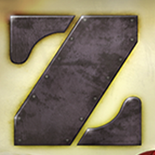
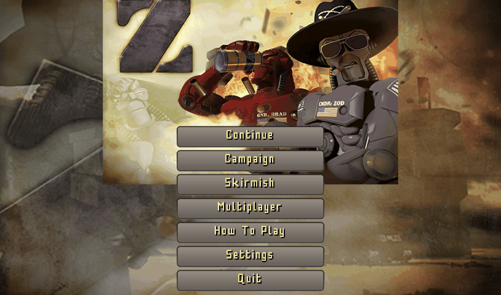
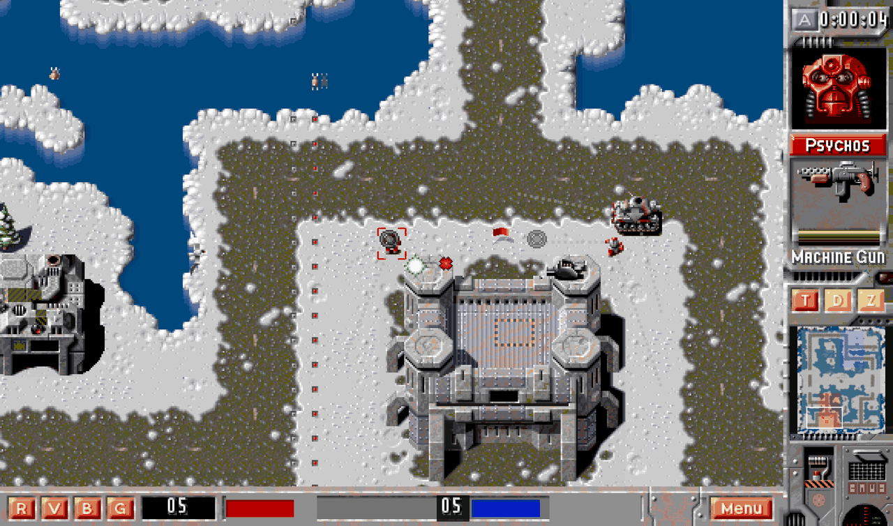
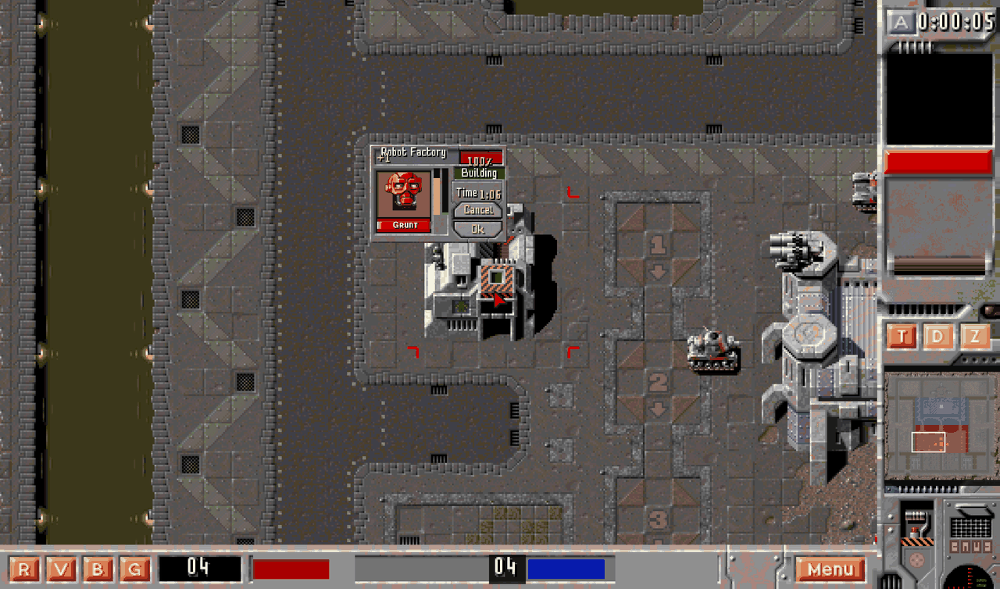
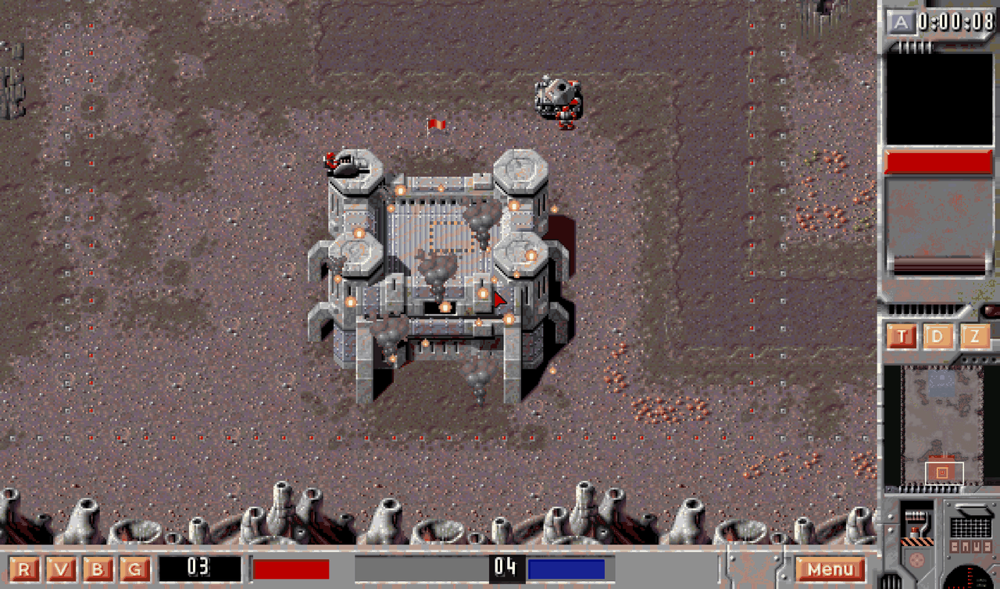
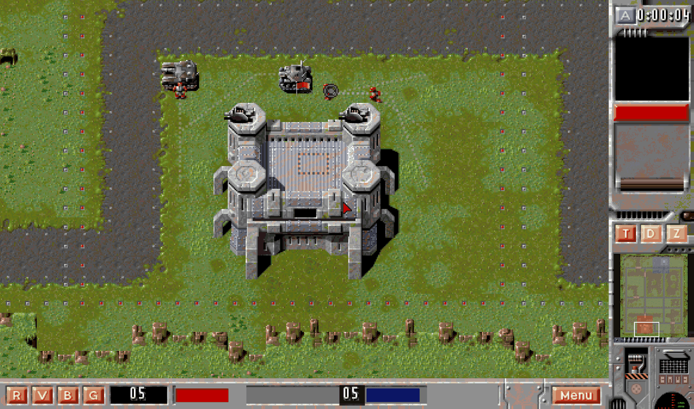

The 1996 robot RTS, rebuilt in Godot 4

A fan remake of Z, the robot real-time strategy game by The Bitmap Brothers. You take territory instead of gathering resources. Every sector you hold builds your units faster.
The remake plays the original 20 campaign levels in the game's own order.
A converter reads them out of the retail LEVEL##.MAP data. It runs
inside the original HUD frame and uses the original sprites, sounds and voice
lines.
The code is original. The graphics and sound belong to The Bitmap Brothers and stay out of the repository, so you supply your own copy of the GOG release and the Zod Engine asset pack.
The 1996 Bitmap Brothers code was never released. The Zod Engine is the open reimplementation that this project's asset pack comes from, so it is the reference of record. This project reads behaviour from it and cites the function instead of guessing.
| Function | What it settled |
|---|---|
ZBuilding::ProcessBuildingsEffects |
How a damaged building burns. It holds a population of effects,
max_effects × (1 − hp/max_hp), topped up when short. |
zsettings.cpp SetDefaults |
Every explosive radius. All nine match: tough 40, light 40, medium 45, heavy 50, missile launcher 80, gun 40, howitzer 40, missile cannon 50, grenade 30. |
ZServer::ProcessMissileDamage |
The splash model. One roll per object, linear falloff, friendly fire off, a circle and not a box. |
ZBot::GoAllOut_3 |
How much of its army the CPU commits, and how often. |
Read it before you call anything underivable. Two items in the bug tracker said "cannot be derived from the art alone" and only needed somebody to open the file.



effects_box, and the ruin goes on burning after it falls —
which is what the original does, because its loop never checks whether the
building is already destroyed.
Every hotkey is the letter printed on the HUD plate that it presses.
| Sidebar | |
|---|---|
| T | smart idle |
| D | defend (toggle) |
| Z | attack-move (toggle) |
| X | dismount |
| Bottom bar | |
|---|---|
| R | select all robots |
| V | select all hardware |
| B | cycle factories |
| G | cycle control groups |
Ctrl+digit assigns a control group. The digit alone selects it, and a second press moves the camera to that squad. Neither D nor Z lit means a plain move.
Two original habits are on by default: an order drops the selection, and a click on a unit centers the camera on it. Both are switchable.
One brain runs per non-player fort team. Each pass it produces from every owned facility, defends owned ground, crews the empty hardware on the map, runs maintenance, holds the frontier bridges, then assigns whatever is left.
The assignment ports ZBot Stage1AI_3. It is what stops the brain
swarming one point.
All three desktop targets cross-build from Linux. You need Godot 4.7.1, its export templates, and your own asset copy.
# convert the assets you supplied python3 tools/gog/convert_assets.py python3 tools/zod/copy_art.py python3 tools/gog/make_icons.py # build tools/build_releases.sh # linux + windows + macos tools/build_rpm.sh # Fedora RPM
| Target | Output |
|---|---|
| Fedora | an RPM that installs /usr/bin/z-remake, a
desktop entry and the icon tree |
| Linux | one self-contained x86_64 binary |
| Windows | one self-contained .exe, with version metadata |
| macOS | a universal .app in a zip, unsigned |
47 headless lanes. A lane passes with zero SCRIPT ERROR lines
and zero CHECK FAILED lines.
# in the editor res://scenes/main.tscn --art-test --quit-after 6000 # and inside the exported binary build/linux/z-remake.x86_64 --headless --art-test --quit-after 6000
The second one matters. An editor-only green run proves nothing about a
build: a packaged game once loaded no building defs, no unit folders and no
effect art, with all 47 lanes green in the editor. Godot packs an imported file
as a .import sidecar, and every directory scan in the project
filtered on the source extension. The export lane is what found it.